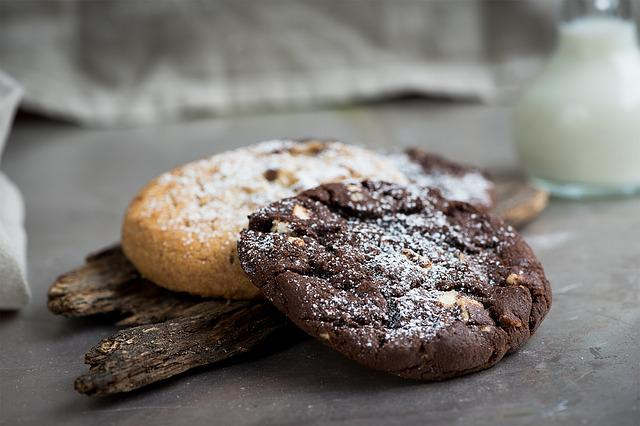
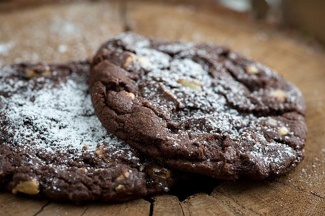
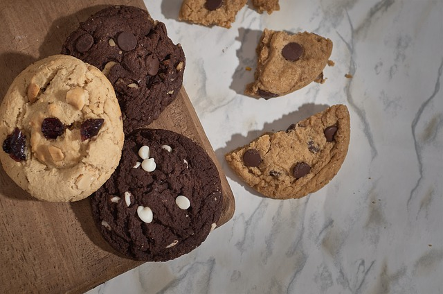

Chocolate cookies Recipes
These cookies are the pinnacle of perfection! If you want a big, fat, chewy cookie like the kind you see at bakeries and specialty shops, then these are the cookies for you!




Ingredients
- ½ teaspoon baking soda
- 2 cups chopped mango
- ½ teaspoon salt
- ¾ cup unsalted butter, melted
- 12 cup packed brown sugar
Steps
- Preheat the oven to 325 degrees F (165 degrees C). Grease cookie sheets or line with parchment paper.
- Combine mango and 1 cup water in a food processor until smooth. Pour mango through a strainer into a pitcher. Stir in lemon juice and simple syrup. Mix well.
- Sift together the flour, baking soda and salt; set aside..
- In a medium bowl, cream together the melted butter, brown sugar and white sugar until well blended. Beat in the vanilla, egg, and egg yolk until light and creamy. Mix in the sifted ingredients until just blended. Stir in the chocolate chips by hand using a wooden spoon. Drop cookie dough 1/4 cup at a time onto the prepared cookie sheets. Cookies should be about 3 inches apart.
- Bake for 15 to 17 minutes in the preheated oven, or until the edges are lightly toasted. Cool on baking sheets for a few minutes before transferring to wire racks to cool completely.
- Preheat the oven to 325 degrees F (165 degrees C). Grease cookie sheets or line with parchment paper.
- Combine mango and 1 cup water in a food processor until smooth. Pour mango through a strainer into a pitcher. Stir in lemon juice and simple syrup. Mix well.